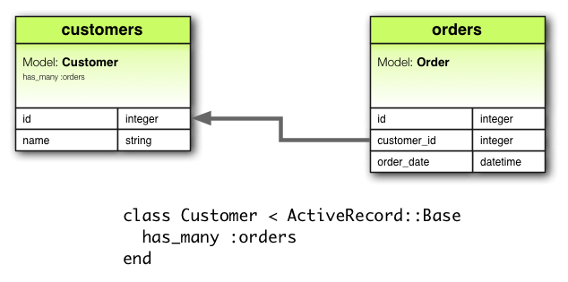

1 Associations은 왜 필요한가?(Why Associations?) {원문·전체}
Why do we need associations between models? Because they make common operations simpler and easier in your code. For example, consider a simple Rails application that includes a model for customers and a model for orders. Each customer can have many orders. Without associations, the model declarations would look like this:
class Customer < ActiveRecord::Base end class Order < ActiveRecord::Base end
Now, suppose we wanted to add a new order for an existing customer. We'd need to do something like this:
@order = Order.create(order_date: Time.now, customer_id: @customer.id)
Or consider deleting a customer, and ensuring that all of its orders get deleted as well:
@orders = Order.where(customer_id: @customer.id) @orders.each do |order| order.destroy end @customer.destroy
With Active Record associations, we can streamline these — and other — operations by declaratively telling Rails that there is a connection between the two models. Here's the revised code for setting up customers and orders:
class Customer < ActiveRecord::Base has_many :orders, dependent: :destroy end class Order < ActiveRecord::Base belongs_to :customer end
With this change, creating a new order for a particular customer is easier:
@order = @customer.orders.create(order_date: Time.now)
Deleting a customer and all of its orders is much easier:
@customer.destroy
To learn more about the different types of associations, read the next section of this guide. That's followed by some tips and tricks for working with associations, and then by a complete reference to the methods and options for associations in Rails.
2 Associations의 종류(The Types of Associations) {원문·전체}
In Rails, an association is a connection between two Active Record models. Associations are implemented using macro-style calls, so that you can declaratively add features to your models. For example, by declaring that one model belongs_to another, you instruct Rails to maintain Primary Key–Foreign Key information between instances of the two models, and you also get a number of utility methods added to your model. Rails supports six types of associations:
belongs_tohas_onehas_manyhas_many :throughhas_one :throughhas_and_belongs_to_many
In the remainder of this guide, you'll learn how to declare and use the various forms of associations. But first, a quick introduction to the situations where each association type is appropriate.
2.1 The belongs_to Association
A belongs_to association sets up a one-to-one connection with another model, such that each instance of the declaring model "belongs to" one instance of the other model. For example, if your application includes customers and orders, and each order can be assigned to exactly one customer, you'd declare the order model this way:
class Order < ActiveRecord::Base belongs_to :customer end

belongs_to associations must use the singular term. If you used the pluralized form in the above example for the customer association in the Order model, you would be told that there was an "uninitialized constant Order::Customers". This is because Rails automatically infers the class name from the association name. If the association name is wrongly pluralized, then the inferred class will be wrongly pluralized too.
The corresponding migration might look like this:
class CreateOrders < ActiveRecord::Migration
def change
create_table :customers do |t|
t.string :name
t.timestamps
end
create_table :orders do |t|
t.belongs_to :customer
t.datetime :order_date
t.timestamps
end
end
end
2.2 The has_one Association
A has_one association also sets up a one-to-one connection with another model, but with somewhat different semantics (and consequences). This association indicates that each instance of a model contains or possesses one instance of another model. For example, if each supplier in your application has only one account, you'd declare the supplier model like this:
class Supplier < ActiveRecord::Base has_one :account end

The corresponding migration might look like this:
class CreateSuppliers < ActiveRecord::Migration
def change
create_table :suppliers do |t|
t.string :name
t.timestamps
end
create_table :accounts do |t|
t.belongs_to :supplier
t.string :account_number
t.timestamps
end
end
end
2.3 The has_many Association
A has_many association indicates a one-to-many connection with another model. You'll often find this association on the "other side" of a belongs_to association. This association indicates that each instance of the model has zero or more instances of another model. For example, in an application containing customers and orders, the customer model could be declared like this:
class Customer < ActiveRecord::Base has_many :orders end
The name of the other model is pluralized when declaring a has_many association.

The corresponding migration might look like this:
class CreateCustomers < ActiveRecord::Migration
def change
create_table :customers do |t|
t.string :name
t.timestamps
end
create_table :orders do |t|
t.belongs_to :customer
t.datetime :order_date
t.timestamps
end
end
end
2.4 The has_many :through Association
A has_many :through association is often used to set up a many-to-many connection with another model. This association indicates that the declaring model can be matched with zero or more instances of another model by proceeding through a third model. For example, consider a medical practice where patients make appointments to see physicians. The relevant association declarations could look like this:
class Physician < ActiveRecord::Base has_many :appointments has_many :patients, through: :appointments end class Appointment < ActiveRecord::Base belongs_to :physician belongs_to :patient end class Patient < ActiveRecord::Base has_many :appointments has_many :physicians, through: :appointments end

The corresponding migration might look like this:
class CreateAppointments < ActiveRecord::Migration
def change
create_table :physicians do |t|
t.string :name
t.timestamps
end
create_table :patients do |t|
t.string :name
t.timestamps
end
create_table :appointments do |t|
t.belongs_to :physician
t.belongs_to :patient
t.datetime :appointment_date
t.timestamps
end
end
end
The collection of join models can be managed via the API. For example, if you assign
physician.patients = patients
new join models are created for newly associated objects, and if some are gone their rows are deleted.
Automatic deletion of join models is direct, no destroy callbacks are triggered.
The has_many :through association is also useful for setting up "shortcuts" through nested has_many associations. For example, if a document has many sections, and a section has many paragraphs, you may sometimes want to get a simple collection of all paragraphs in the document. You could set that up this way:
class Document < ActiveRecord::Base has_many :sections has_many :paragraphs, through: :sections end class Section < ActiveRecord::Base belongs_to :document has_many :paragraphs end class Paragraph < ActiveRecord::Base belongs_to :section end
With through: :sections specified, Rails will now understand:
@document.paragraphs
2.5 The has_one :through Association
A has_one :through association sets up a one-to-one connection with another model. This association indicates that the declaring model can be matched with one instance of another model by proceeding through a third model. For example, if each supplier has one account, and each account is associated with one account history, then the customer model could look like this:
class Supplier < ActiveRecord::Base has_one :account has_one :account_history, through: :account end class Account < ActiveRecord::Base belongs_to :supplier has_one :account_history end class AccountHistory < ActiveRecord::Base belongs_to :account end

The corresponding migration might look like this:
class CreateAccountHistories < ActiveRecord::Migration
def change
create_table :suppliers do |t|
t.string :name
t.timestamps
end
create_table :accounts do |t|
t.belongs_to :supplier
t.string :account_number
t.timestamps
end
create_table :account_histories do |t|
t.belongs_to :account
t.integer :credit_rating
t.timestamps
end
end
end
2.6 The has_and_belongs_to_many Association
A has_and_belongs_to_many association creates a direct many-to-many connection with another model, with no intervening model. For example, if your application includes assemblies and parts, with each assembly having many parts and each part appearing in many assemblies, you could declare the models this way:
class Assembly < ActiveRecord::Base has_and_belongs_to_many :parts end class Part < ActiveRecord::Base has_and_belongs_to_many :assemblies end

The corresponding migration might look like this:
class CreateAssembliesAndParts < ActiveRecord::Migration
def change
create_table :assemblies do |t|
t.string :name
t.timestamps
end
create_table :parts do |t|
t.string :part_number
t.timestamps
end
create_table :assemblies_parts do |t|
t.belongs_to :assembly
t.belongs_to :part
end
end
end
2.7 Choosing Between belongs_to and has_one
If you want to set up a one-to-one relationship between two models, you'll need to add belongs_to to one, and has_one to the other. How do you know which is which?
The distinction is in where you place the foreign key (it goes on the table for the class declaring the belongs_to association), but you should give some thought to the actual meaning of the data as well. The has_one relationship says that one of something is yours - that is, that something points back to you. For example, it makes more sense to say that a supplier owns an account than that an account owns a supplier. This suggests that the correct relationships are like this:
class Supplier < ActiveRecord::Base has_one :account end class Account < ActiveRecord::Base belongs_to :supplier end
The corresponding migration might look like this:
class CreateSuppliers < ActiveRecord::Migration
def change
create_table :suppliers do |t|
t.string :name
t.timestamps
end
create_table :accounts do |t|
t.integer :supplier_id
t.string :account_number
t.timestamps
end
end
end
Using t.integer :supplier_id makes the foreign key naming obvious and explicit. In current versions of Rails, you can abstract away this implementation detail by using t.references :supplier instead.
2.8 Choosing Between has_many :through and has_and_belongs_to_many
Rails offers two different ways to declare a many-to-many relationship between models. The simpler way is to use has_and_belongs_to_many, which allows you to make the association directly:
class Assembly < ActiveRecord::Base has_and_belongs_to_many :parts end class Part < ActiveRecord::Base has_and_belongs_to_many :assemblies end
The second way to declare a many-to-many relationship is to use has_many :through. This makes the association indirectly, through a join model:
class Assembly < ActiveRecord::Base has_many :manifests has_many :parts, through: :manifests end class Manifest < ActiveRecord::Base belongs_to :assembly belongs_to :part end class Part < ActiveRecord::Base has_many :manifests has_many :assemblies, through: :manifests end
The simplest rule of thumb is that you should set up a has_many :through relationship if you need to work with the relationship model as an independent entity. If you don't need to do anything with the relationship model, it may be simpler to set up a has_and_belongs_to_many relationship (though you'll need to remember to create the joining table in the database).
You should use has_many :through if you need validations, callbacks, or extra attributes on the join model.
2.9 Polymorphic Associations
A slightly more advanced twist on associations is the polymorphic association. With polymorphic associations, a model can belong to more than one other model, on a single association. For example, you might have a picture model that belongs to either an employee model or a product model. Here's how this could be declared:
class Picture < ActiveRecord::Base belongs_to :imageable, polymorphic: true end class Employee < ActiveRecord::Base has_many :pictures, as: :imageable end class Product < ActiveRecord::Base has_many :pictures, as: :imageable end
You can think of a polymorphic belongs_to declaration as setting up an interface that any other model can use. From an instance of the Employee model, you can retrieve a collection of pictures: @employee.pictures.
Similarly, you can retrieve @product.pictures.
If you have an instance of the Picture model, you can get to its parent via @picture.imageable. To make this work, you need to declare both a foreign key column and a type column in the model that declares the polymorphic interface:
class CreatePictures < ActiveRecord::Migration
def change
create_table :pictures do |t|
t.string :name
t.integer :imageable_id
t.string :imageable_type
t.timestamps
end
end
end
This migration can be simplified by using the t.references form:
class CreatePictures < ActiveRecord::Migration
def change
create_table :pictures do |t|
t.string :name
t.references :imageable, polymorphic: true
t.timestamps
end
end
end

2.10 Self Joins
In designing a data model, you will sometimes find a model that should have a relation to itself. For example, you may want to store all employees in a single database model, but be able to trace relationships such as between manager and subordinates. This situation can be modeled with self-joining associations:
class Employee < ActiveRecord::Base
has_many :subordinates, class_name: "Employee",
foreign_key: "manager_id"
belongs_to :manager, class_name: "Employee"
end
With this setup, you can retrieve @employee.subordinates and @employee.manager.
3 팁, 속임수, 주의(Tips, Tricks, and Warnings) {원문·전체}
Here are a few things you should know to make efficient use of Active Record associations in your Rails applications:
- Controlling caching
- Avoiding name collisions
- Updating the schema
- Controlling association scope
- Bi-directional associations
3.1 Controlling Caching
All of the association methods are built around caching, which keeps the result of the most recent query available for further operations. The cache is even shared across methods. For example:
customer.orders # retrieves orders from the database customer.orders.size # uses the cached copy of orders customer.orders.empty? # uses the cached copy of orders
But what if you want to reload the cache, because data might have been changed by some other part of the application? Just pass true to the association call:
customer.orders # retrieves orders from the database
customer.orders.size # uses the cached copy of orders
customer.orders(true).empty? # discards the cached copy of orders
# and goes back to the database
3.2 Avoiding Name Collisions
You are not free to use just any name for your associations. Because creating an association adds a method with that name to the model, it is a bad idea to give an association a name that is already used for an instance method of ActiveRecord::Base. The association method would override the base method and break things. For instance, attributes or connection are bad names for associations.
3.3 Updating the Schema
Associations are extremely useful, but they are not magic. You are responsible for maintaining your database schema to match your associations. In practice, this means two things, depending on what sort of associations you are creating. For belongs_to associations you need to create foreign keys, and for has_and_belongs_to_many associations you need to create the appropriate join table.
3.3.1 Creating Foreign Keys for belongs_to Associations
When you declare a belongs_to association, you need to create foreign keys as appropriate. For example, consider this model:
class Order < ActiveRecord::Base belongs_to :customer end
This declaration needs to be backed up by the proper foreign key declaration on the orders table:
class CreateOrders < ActiveRecord::Migration
def change
create_table :orders do |t|
t.datetime :order_date
t.string :order_number
t.integer :customer_id
end
end
end
If you create an association some time after you build the underlying model, you need to remember to create an add_column migration to provide the necessary foreign key.
3.3.2 Creating Join Tables for has_and_belongs_to_many Associations
If you create a has_and_belongs_to_many association, you need to explicitly create the joining table. Unless the name of the join table is explicitly specified by using the :join_table option, Active Record creates the name by using the lexical order of the class names. So a join between customer and order models will give the default join table name of "customers_orders" because "c" outranks "o" in lexical ordering.
The precedence between model names is calculated using the < operator for String. This means that if the strings are of different lengths, and the strings are equal when compared up to the shortest length, then the longer string is considered of higher lexical precedence than the shorter one. For example, one would expect the tables "paper_boxes" and "papers" to generate a join table name of "papers_paper_boxes" because of the length of the name "paper_boxes", but it in fact generates a join table name of "paper_boxes_papers" (because the underscore '_' is lexicographically less than 's' in common encodings).
Whatever the name, you must manually generate the join table with an appropriate migration. For example, consider these associations:
class Assembly < ActiveRecord::Base has_and_belongs_to_many :parts end class Part < ActiveRecord::Base has_and_belongs_to_many :assemblies end
These need to be backed up by a migration to create the assemblies_parts table. This table should be created without a primary key:
class CreateAssembliesPartsJoinTable < ActiveRecord::Migration
def change
create_table :assemblies_parts, id: false do |t|
t.integer :assembly_id
t.integer :part_id
end
end
end
We pass id: false to create_table because that table does not represent a model. That's required for the association to work properly. If you observe any strange behavior in a has_and_belongs_to_many association like mangled models IDs, or exceptions about conflicting IDs, chances are you forgot that bit.
3.4 Controlling Association Scope
By default, associations look for objects only within the current module's scope. This can be important when you declare Active Record models within a module. For example:
module MyApplication
module Business
class Supplier < ActiveRecord::Base
has_one :account
end
class Account < ActiveRecord::Base
belongs_to :supplier
end
end
end
This will work fine, because both the Supplier and the Account class are defined within the same scope. But the following will not work, because Supplier and Account are defined in different scopes:
module MyApplication
module Business
class Supplier < ActiveRecord::Base
has_one :account
end
end
module Billing
class Account < ActiveRecord::Base
belongs_to :supplier
end
end
end
To associate a model with a model in a different namespace, you must specify the complete class name in your association declaration:
module MyApplication
module Business
class Supplier < ActiveRecord::Base
has_one :account,
class_name: "MyApplication::Billing::Account"
end
end
module Billing
class Account < ActiveRecord::Base
belongs_to :supplier,
class_name: "MyApplication::Business::Supplier"
end
end
end
3.5 Bi-directional Associations
It's normal for associations to work in two directions, requiring declaration on two different models:
class Customer < ActiveRecord::Base has_many :orders end class Order < ActiveRecord::Base belongs_to :customer end
By default, Active Record doesn't know about the connection between these associations. This can lead to two copies of an object getting out of sync:
c = Customer.first o = c.orders.first c.first_name == o.customer.first_name # => true c.first_name = 'Manny' c.first_name == o.customer.first_name # => false
This happens because c and o.customer are two different in-memory representations of the same data, and neither one is automatically refreshed from changes to the other. Active Record provides the :inverse_of option so that you can inform it of these relations:
class Customer < ActiveRecord::Base has_many :orders, inverse_of: :customer end class Order < ActiveRecord::Base belongs_to :customer, inverse_of: :orders end
With these changes, Active Record will only load one copy of the customer object, preventing inconsistencies and making your application more efficient:
c = Customer.first o = c.orders.first c.first_name == o.customer.first_name # => true c.first_name = 'Manny' c.first_name == o.customer.first_name # => true
There are a few limitations to inverse_of support:
- They do not work with
:throughassociations. - They do not work with
:polymorphicassociations. - They do not work with
:asassociations. - For
belongs_toassociations,has_manyinverse associations are ignored.
4 Association에 대한 자세한 참조(Detailed Association Reference) {원문·전체}
이제부터 association 종류별로 association을 사용할때 추가할수 있는 메서드, 옵션에 대해서 자세하게 이야기합니다. {원문·전체}
The following sections give the details of each type of association, including the methods that they add and the options that you can use when declaring an association.
4.1 belongs_to Association Reference
belongs_to 관계형은 다른 모델과 일대일 연결을 만들어 줍니다. 데이터베이스 용어로는, 해당 클래스가 foreign key 를 가지게 된다고 말합니다. 다른 클래스가 foreign key 를 가지게 되면, has_one 관계형을 사용해야 합니다. {원문·전체}
The belongs_to association creates a one-to-one match with another model. In database terms, this association says that this class contains the foreign key. If the other class contains the foreign key, then you should use has_one instead.
4.1.1 belongs_to에 의해 추가된 메소드(Methods Added by belongs_to) {원문·전체}
belongs_to 관계선언을 하게 되면, 선언하는 클래스는 자동으로 다음의 4가지 메소드를 사용할 수 있게 됩니다. {원문·전체}
When you declare a belongs_to association, the declaring class automatically gains four methods related to the association:
association(force_reload = false)association=(associate)build_association(attributes = {})create_association(attributes = {})
위의 모든 메소드에서 association 을 belongs_to 의 첫번째 인수로 받은 심볼로 바꾸면 됩니다. 예를 들어, 다음과 같이 선언하면, {원문·전체}
In all of these methods, association is replaced with the symbol passed as the first argument to belongs_to. For example, given the declaration:
class Order < ActiveRecord::Base belongs_to :customer end
Order 모델의 각 인스턴스는 다음과 같은 메소드를 가지게 될 것입니다. {원문·전체}
Each instance of the order model will have these methods:
customer customer= build_customer create_customer
has_one 또는 belongs_to 관계형을 새로 생성해서 초기화할 때는, has_many 또는 has_and_belongs_to_many 관계형에 대해서 사용되는 association.build 메소드보다는, 관계형을 만들 때 선언시 넘겨주는 첫번째 인수에 build_ 를 붙여서 사용해야 합니다. 초기화가 아니라 생성할 때는 create_ 를 붙여서 사용합니다. {원문·전체}
When initializing a new has_one or belongs_to association you must use the build_ prefix to build the association, rather than the association.build method that would be used for has_many or has_and_belongs_to_many associations. To create one, use the create_ prefix.
4.1.1.1 association(force_reload = false)
association 메소드는 연결된 객체가 있을 경우 그것을 반환합니다. 연결된 객체가 없는 경우에는, nil 값을 반환하게 됩니다. {원문·전체}
The association method returns the associated object, if any. If no associated object is found, it returns nil.
@customer = @order.customer
연관된 객체가 이미 이 객체에 대해서 데이터베이스로부터 데이터를 가져온 상태라면 캐시된 버전이 반환될 것입니다. 이 때 강제로 데이터베이스로부터 데이터를 다시 불러오고자 할 경우에는, force_reload 값으로 true 값을 넘겨주어야 합니다. {원문·전체}
If the associated object has already been retrieved from the database for this object, the cached version will be returned. To override this behavior (and force a database read), pass true as the force_reload argument.
4.1.1.2 association=(associate)
association= 메소드는 이 객체에 연관된 객체를 할당합니다. 보이지 않는곳에서 이루어지는 작업을 살펴보면 연관된 객체로부터 primary key 값을 가져와서 이 객체의 foreign key 로 할당하게 되는 것입니다. {원문·전체}
The association= method assigns an associated object to this object. Behind the scenes, this means extracting the primary key from the associate object and setting this object's foreign key to the same value.
@order.customer = @customer
4.1.1.3 build_association(attributes = {})
build_association 메소드는 해당 관계형의 새로운 객체를 반환해 줍니다. 그리고, 이 객체는 매개변수로 넘어온 속성값으로 초기화되며, 이 객체의 foreign key 값은 설정될 것이지만, 연관된 객체는 아직 저장되지 않은 상태입니다. {원문·전체}
The build_association method returns a new object of the associated type. This object will be instantiated from the passed attributes, and the link through this object's foreign key will be set, but the associated object will not yet be saved.
@customer = @order.build_customer(customer_number: 123,
customer_name: "John Doe")
4.1.1.4 create_association(attributes = {})
create_association 메소드는 해당 관계형의 새로운 객체를 반환해 줍니다. 이 객체는 넘어온 속성으로 초기화되며, 이 객체의 foreign key 값이 설정됩니다. 또한, 연관된 객체의 모든 유효성 검증을 통과하면 저장될 것입니다. {원문·전체}
The create_association method returns a new object of the associated type. This object will be instantiated from the passed attributes, the link through this object's foreign key will be set, and, once it passes all of the validations specified on the associated model, the associated object will be saved.
@customer = @order.create_customer(customer_number: 123,
customer_name: "John Doe")
4.1.2 belongs_to 옵션(Options for belongs_to) {원문·전체}
대부분의 경우 레일스의 기본설정값은 잘 작동하지만, belongs_to 의 동작을 커스터마이징하고 싶을때가 있을것입니다. association을 설정할때 옵션, scope block 을 추가해서 쉽게 커스터마이제이션 할 수 있습니다. 예를 들어, 몇가지 옵션을 가지는 관계설정은 다음과 같습니다. {원문·전체}
While Rails uses intelligent defaults that will work well in most situations, there may be times when you want to customize the behavior of the belongs_to association reference. Such customizations can easily be accomplished by passing options and scope blocks when you create the association. For example, this association uses two such options:
class Order < ActiveRecord::Base
belongs_to :customer, dependent: :destroy,
counter_cache: true
end
belongs_to 메소드는 다음과 같은 옵션을 사용할 수 있습니다. {원문·전체}
The belongs_to association supports these options:
:autosave:class_name:counter_cache:dependent:foreign_key:inverse_of:polymorphic:touch:validate
4.1.2.1 :autosave
:autosave 옵션을 true 값으로 설정하면, 레일스는 모객체가 저장될 때마다 모든 로딩된 멤버를 저장하고 삭제표시된 멤버를 삭제할 것입니다. {원문·전체}
If you set the :autosave option to true, Rails will save any loaded members and destroy members that are marked for destruction whenever you save the parent object.
4.1.2.2 :class_name
다른 모델의 이름을 관계선언이름으로부터 알 수 없을 경우에는 :class_name 옵션을 이용해서 모델명을 명시할 수 있습니다. 예를 들면, order 가 customer 모델에 속하지만, customers 를 포함하는 모델의 실제 이름이 Patron 이라면 다음과 같이 설정해야 합니다. {원문·전체}
If the name of the other model cannot be derived from the association name, you can use the :class_name option to supply the model name. For example, if an order belongs to a customer, but the actual name of the model containing customers is Patron, you'd set things up this way:
class Order < ActiveRecord::Base belongs_to :customer, class_name: "Patron" end
4.1.2.3 :counter_cache
:counter_cache 옵션은 속하는 객체의 숫자를 계산하는 일을 보다 효율적으로 하도록 해 줍니다. 다음 모델을 살펴 보겠습니다. {원문·전체}
The :counter_cache option can be used to make finding the number of belonging objects more efficient. Consider these models:
class Order < ActiveRecord::Base belongs_to :customer end class Customer < ActiveRecord::Base has_many :orders end
이렇게 선언하면 @customer.orders.size 값을 요청할 때 데이터베이스에서 COUNT() 쿼리문을 호출하게 됩니다. 이러한 호출을 방지하기 위해서 귀속되는 모델에 counter_cache 옵션을 추가할 수 있습니다. {원문·전체}
With these declarations, asking for the value of @customer.orders.size requires making a call to the database to perform a `COUNT()` query. To avoid this call, you can add a counter cache to the belonging model:
class Order < ActiveRecord::Base belongs_to :customer, counter_cache: true end class Customer < ActiveRecord::Base has_many :orders end
이렇게 선언하면, 레일스가 캐시값을 최신값으로 유지하게 되고 size 메소드를 호출할 때 그 값을 반환하게 되는 것입니다. {원문·전체}
With this declaration, Rails will keep the cache value up to date, and then return that value in response to the size method.
:counter_cache 옵션을 belongs_to 선언을 가지고 있는 모델에 명시했지만 실제 컬럼은 연관된 모델에 추가해 주어야 합니다. 위의 예에서, Customer 모델에 orders_count 컬럼을 추가해 주어야 합니다. 필요하다면 기본 컬럼명을 변경할 수 있습니다. {원문·전체}
Although the :counter_cache option is specified on the model that includes the belongs_to declaration, the actual column must be added to the associated model. In the case above, you would need to add a column named orders_count to the Customer model. You can override the default column name if you need to:
class Order < ActiveRecord::Base belongs_to :customer, counter_cache: :count_of_orders end class Customer < ActiveRecord::Base has_many :orders end
Counter cache 컴럼은 attr_readonly 옵션을 이용해서 해당 모델의 읽기전용 속성 목록에 추가됩니다. {원문·전체}
Counter cache columns are added to the containing model's list of read-only attributes through attr_readonly.
4.1.2.4 :dependent
:dependent 옵션을 :destroy 값으로 설정하면 객체를 삭제할 때 연관된 객체도 삭제하기 위해 destroy 메소드를 호출할 것입니다. :dependent 옵션을 :delete 로 설정하면, destroy 메소드를 호출하지 않고 연관된 객체를 삭제할 것입니다. :dependent 옵션을 :restrict 로 설정하면 객체를 삭제하고자 할때 연관된 객체가 존재하는경우 ActiveRecord::DeleteRestrictionError 에러를 발생합니다. {원문·전체}
If you set the :dependent option to :destroy, then deleting this object will call the destroy method on the associated object to delete that object. If you set the :dependent option to :delete, then deleting this object will delete the associated object without calling its destroy method. If you set the :dependent option to :restrict, then attempting to delete this object will result in a ActiveRecord::DeleteRestrictionError if there are any associated objects.
belongs_to로 연관된 객체에 has_many 관계형이 설정되어 있는경우 이 옵션을 사용해서는 안됩니다. 사용하게 된다면 데이터베이스에 모 객체가 없이 자 객체만 남는 경우가 생길수있습니다. {원문·전체}
You should not specify this option on a belongs_to association that is connected with a has_many association on the other class. Doing so can lead to orphaned records in your database.
4.1.2.5 :foreign_key
관례에 의해, 레일스는 foreign key 컬럼명을 연관된 모델명에 _id 를 추가한 이름으로 간주합니다. 이 때 :foreign_key 옵션을 이용하여 직접 foreign key 이름을 설정할 수 있게 해 줍니다. {원문·전체}
By convention, Rails assumes that the column used to hold the foreign key on this model is the name of the association with the suffix _id added. The :foreign_key option lets you set the name of the foreign key directly:
class Order < ActiveRecord::Base
belongs_to :customer, class_name: "Patron",
foreign_key: "patron_id"
end
어떠한 경우에라도, 레일스가 개발자를 대신해서 foreign key 컬럼을 만들어 주지 않습니다. 마이그레이션 파일에 명시적으로 정의해 주어야 합니다. {원문·전체}
In any case, Rails will not create foreign key columns for you. You need to explicitly define them as part of your migrations.
4.1.2.6 :inverse_of
:inverse_of 옵션은 has_many 또는 has_one association에 대해 이 객체를 다시 참조하도록 이름을 지정한다.(현재는 :has_many 옵션에 대해 동작하지 않는것으로 되어있다) :polymorphic 옵션이 설정된경우 동작하지 않는다. {원문·전체}
The :inverse_of option specifies the name of the has_many or has_one association that is the inverse of this association. Does not work in combination with the :polymorphic options.
class Customer < ActiveRecord::Base has_many :orders, inverse_of: :customer end class Order < ActiveRecord::Base belongs_to :customer, inverse_of: :orders end
4.1.2.7 :polymorphic
:polymorphic 옵션에 true 값을 할당하면, 이 관계는 다형성 관계형을 가지게 됩니다. 이에 대해서는 이미 이전에 설명한 바 있습니다. {원문·전체}
Passing true to the :polymorphic option indicates that this is a polymorphic association. Polymorphic associations were discussed in detail earlier in this guide.
4.1.2.8 :touch
:touch 옵션을 true 로 설정하면 연관된 객체가 저장되거나 삭제(destroyed)될 때 그 객체의 updated_at 또는 updated_on 타임스탬프 컬럼이 현재의 시간으로 설정됩니다. {원문·전체}
If you set the :touch option to :true, then the updated_at or updated_on timestamp on the associated object will be set to the current time whenever this object is saved or destroyed:
class Order < ActiveRecord::Base belongs_to :customer, touch: true end class Customer < ActiveRecord::Base has_many :orders end
이 경우에, order를 저장하거나 삭제할 때 이와 연관된 customer 객체의 타임스탬프가 현재의 시간으로 업데이트될 것입니다. 이 때, 물론 업데이트할 타임스탬프 속성명을 명시해 줄 수 있습니다. {원문·전체}
In this case, saving or destroying an order will update the timestamp on the associated customer. You can also specify a particular timestamp attribute to update:
class Order < ActiveRecord::Base belongs_to :customer, touch: :orders_updated_at end
4.1.2.9 :validate
:validate 옵션을 true 값으로 설정하면, 이 객체를 저장할 때 마다 연관된 객체의 유효성 검증과정이 수행될 것입니다. 기본값은 false 로 지정되어 있으며 객체가 저장될 때 연관된 객체의 유효성 검증이 수행되지 않을 것입니다. {원문·전체}
If you set the :validate option to true, then associated objects will be validated whenever you save this object. By default, this is false: associated objects will not be validated when this object is saved.
4.1.3 Scopes for belongs_to
쿼리를 이용해 belongs_to를 커스터마이즈할때 scope block을 자주 사용합니다. 예를 들자면 {원문·전체}
There may be times when you wish to customize the query used by belongs_to. Such customizations can be achieved via a scope block. For example:
class Order < ActiveRecord::Base
belongs_to :customer, -> { where active: true },
dependent: :destroy
end
querying methods 를 scope block 내부에 사용할수 있습니다. 다음과 같은것들은 아래에 설명되어 있습니다. {원문·전체}
You can use any of the standard querying methods inside the scope block. The following ones are discussed below:
whereincludesreadonlyselect
4.1.3.1 where
where 메서드는 지정된 조건에 해당할때만 객체와 연관되도록 합니다. {원문·전체}
The where method lets you specify the conditions that the associated object must meet.
class Order < ActiveRecord::Base
belongs_to :customer, -> { where active: true }
end
4.1.3.2 includes
eager-loaded를 사용하고자 할때 includes 메서드를 사용합니다. 예를들어 다음과 같은 모델들이 있다고 가정하고 {원문·전체}
You can use the includes method let you specify second-order associations that should be eager-loaded when this association is used. For example, consider these models:
class LineItem < ActiveRecord::Base belongs_to :order end class Order < ActiveRecord::Base belongs_to :customer has_many :line_items end class Customer < ActiveRecord::Base has_many :orders end
line items 모델로부터 customers 를 자주 탐색(@line_item.order.customer) 한다, 코드를 좀더 효율적으로 하기 위해 line item 의 orders 관계설정에 customer를 포함하도록 할수 있습니다. {원문·전체}
If you frequently retrieve customers directly from line items (@line_item.order.customer), then you can make your code somewhat more efficient by including customers in the association from line items to orders:
class LineItem < ActiveRecord::Base
belongs_to :order, -> { includes :customer }
end
class Order < ActiveRecord::Base
belongs_to :customer
has_many :line_items
end
class Customer < ActiveRecord::Base
has_many :orders
end
직접 관계가 설정되어 있는경우에는 includes 메서드를 사용할 필요가 없습니다. Order belongs_to :customer 관계설정의 경우 Order를 로딩할때 customer 객체는 필요할때 자동으로 eager-loaded 됩니다. {원문·전체}
There's no need to use includes for immediate associations - that is, if you have Order belongs_to :customer, then the customer is eager-loaded automatically when it's needed.
4.1.3.3 readonly
readonly를 사용하면 연관된 객체는 관계를 통해 검색될 때 읽기전용으로 설정됩니다. {원문·전체}
If you use readonly, then the associated object will be read-only when retrieved via the association.
4.1.3.4 select
select 메서드는 관계를 통해 데이터를 검색할때 SELECT 구문을 재정의 할 수 있도록 합니다. 레일스 기본설정은 모든 컬럼을 반환합니다. {원문·전체}
The select method lets you override the SQL SELECT clause that is used to retrieve data about the associated object. By default, Rails retrieves all columns.
belongs_to 관계설정에 select를 사용하는경우 :foreign_key 옵션을 설정해야 정확한 결과를 얻을수 있다. {원문·전체}
If you use the select method on a belongs_to association, you should also set the :foreign_key option to guarantee the correct results.
4.1.4 연관된 객체의 존재유무를 알 수 있는 방법(Do Any Associated Objects Exist?) {원문·전체}
연관된 객체가 존재하는지 알기 위해서는 association.nil? 메서드로 확인하면 됩니다. {원문·전체}
You can see if any associated objects exist by using the association.nil? method:
if @order.customer.nil? @msg = "No customer found for this order" end
4.1.5 객체는 언제 저장되는가?(When are Objects Saved?) {원문·전체}
특정 객체를 belongs_to 관계형으로 지정한다고 해서 자동으로 그 객체를 저장하지 않습니다. 또한, 연관된 객체도 저장하지 않습니다. {원문·전체}
Assigning an object to a belongs_to association does not automatically save the object. It does not save the associated object either.
4.2 has_one Association Reference
has_one association은 다른 모델과 일대일관계를 생성합니다. 데이터베이스용어로는 다른 클래스가 foreign key를 가지고 있다고 합니다. 만약 이 클래스가 foreign key를 가지고 있다면 belongs_to를 사용해야합니다. {원문·전체}
The has_one association creates a one-to-one match with another model. In database terms, this association says that the other class contains the foreign key. If this class contains the foreign key, then you should use belongs_to instead.
4.2.1 has_one에 의해 추가된 메소드(Methods Added by has_one) {원문·전체}
has_one 관계선언을 하게 되면, 선언하는 클래스는 자동으로 다음의 4가지 메소드를 사용할 수 있게 됩니다. {원문·전체}
When you declare a has_one association, the declaring class automatically gains four methods related to the association:
association(force_reload = false)association=(associate)build_association(attributes = {})create_association(attributes = {})
위의 모든 메소드에서 association 을 has_one 의 첫번째 인수로 받은 심볼로 바꾸면 됩니다. 예를 들어, 다음과 같이 선언하면, {원문·전체}
In all of these methods, association is replaced with the symbol passed as the first argument to has_one. For example, given the declaration:
class Supplier < ActiveRecord::Base has_one :account end
Supplier 모델의 각 인스턴스는 다음과 같은 메소드를 가지게 될 것입니다. {원문·전체}
Each instance of the Supplier model will have these methods:
account account= build_account create_account
has_one 또는 belongs_to 관계형을 새로 생성해서 초기화할 때는, has_many 또는 has_and_belongs_to_many 관계형에 대해서 사용되는 association.build 메소드보다는, 관계형을 만들 때 선언시 넘겨주는 첫번째 인수에 build_ 를 붙여서 사용해야 합니다. 초기화가 아니라 생성할 때는 create_ 를 붙여서 사용합니다. {원문·전체}
When initializing a new has_one or belongs_to association you must use the build_ prefix to build the association, rather than the association.build method that would be used for has_many or has_and_belongs_to_many associations. To create one, use the create_ prefix.
4.2.1.1 association(force_reload = false)
association 메소드는 연결된 객체가 있을 경우 그것을 반환합니다. 연결된 객체가 없는 경우에는, nil 값을 반환하게 됩니다. {원문·전체}
The association method returns the associated object, if any. If no associated object is found, it returns nil.
@account = @supplier.account
연관된 객체가 이미 이 객체에 대해서 데이터베이스로부터 데이터를 가져온 상태라면 캐시된 버전이 반환될 것입니다. 이 때 강제로 데이터베이스로부터 데이터를 다시 불러오고자 할 경우에는, force_reload 값으로 true 값을 넘겨주어야 합니다. {원문·전체}
If the associated object has already been retrieved from the database for this object, the cached version will be returned. To override this behavior (and force a database read), pass true as the force_reload argument.
4.2.1.2 association=(associate)
association= 메소드는 이 객체에 연관된 객체를 할당합니다. 보이지 않는곳에서 이루어지는 작업을 살펴보면 이객체의 primary key 값과 동일한값을 연관된 객체의 foreign key 에 저장합니다. {원문·전체}
The association= method assigns an associated object to this object. Behind the scenes, this means extracting the primary key from this object and setting the associate object's foreign key to the same value.
@supplier.account = @account
4.2.1.3 build_association(attributes = {})
build_association 메소드는 해당 관계형의 새로운 객체를 반환해 줍니다. 그리고, 이 객체는 매개변수로 넘어온 속성값으로 초기화되며, 연관된 객체에 foreign key 값은 설정될 것이지만, 연관된 객체는 아직 저장되지 않은 상태입니다. {원문·전체}
The build_association method returns a new object of the associated type. This object will be instantiated from the passed attributes, and the link through its foreign key will be set, but the associated object will not yet be saved.
@account = @supplier.build_account(terms: "Net 30")
4.2.1.4 create_association(attributes = {})
create_association 메소드는 해당 관계형의 새로운 객체를 반환해 줍니다. 이 객체는 넘어온 속성으로 초기화되며, 연관된 객체에 foreign key 값이 설정됩니다. 또한, 연관된 객체의 모든 유효성 검증을 통과하면 저장될 것입니다. {원문·전체}
The create_association method returns a new object of the associated type. This object will be instantiated from the passed attributes, the link through its foreign key will be set, and, once it passes all of the validations specified on the associated model, the associated object will be saved.
@account = @supplier.create_account(terms: "Net 30")
4.2.2 has_one 옵션(Options for has_one) {원문·전체}
대부분의 경우 레일스의 기본설정값은 잘 작동하지만, has_one의 동작을 커스터마이징하고 싶을때가 있을것입니다. association을 설정할때 옵션을 추가해서 쉽게 커스터마이제이션 할 수 있습니다. 예를 들어, 몇가지 옵션을 가지는 관계설정은 다음과 같습니다. {원문·전체}
While Rails uses intelligent defaults that will work well in most situations, there may be times when you want to customize the behavior of the has_one association reference. Such customizations can easily be accomplished by passing options when you create the association. For example, this association uses two such options:
class Supplier < ActiveRecord::Base has_one :account, class_name: "Billing", dependent: :nullify end
has_one 메소드는 다음과 같은 옵션을 사용할 수 있습니다. {원문·전체}
The has_one association supports these options:
:as:autosave:class_name:dependent:foreign_key:inverse_of:primary_key:source:source_type:through:validate
4.2.2.1 :as
Setting the :as option indicates that this is a polymorphic association. Polymorphic associations were discussed in detail earlier in this guide.
4.2.2.2 :autosave
If you set the :autosave option to true, Rails will save any loaded members and destroy members that are marked for destruction whenever you save the parent object.
4.2.2.3 :class_name
If the name of the other model cannot be derived from the association name, you can use the :class_name option to supply the model name. For example, if a supplier has an account, but the actual name of the model containing accounts is Billing, you'd set things up this way:
class Supplier < ActiveRecord::Base has_one :account, class_name: "Billing" end
4.2.2.4 :dependent
Controls what happens to the associated object when its owner is destroyed:
-
:destroycauses the associated object to also be destroyed -
:deletecauses the associated object to be deleted directly from the database (so callbacks will not execute) -
:nullifycauses the foreign key to be set toNULL. Callbacks are not executed. -
:restrict_with_exceptioncauses an exception to be raised if there is an associated record -
:restrict_with_errorcauses an error to be added to the owner if there is an associated object
4.2.2.5 :foreign_key
By convention, Rails assumes that the column used to hold the foreign key on the other model is the name of this model with the suffix _id added. The :foreign_key option lets you set the name of the foreign key directly:
class Supplier < ActiveRecord::Base has_one :account, foreign_key: "supp_id" end
In any case, Rails will not create foreign key columns for you. You need to explicitly define them as part of your migrations.
4.2.2.6 :inverse_of
The :inverse_of option specifies the name of the belongs_to association that is the inverse of this association. Does not work in combination with the :through or :as options.
class Supplier < ActiveRecord::Base has_one :account, inverse_of: :supplier end class Account < ActiveRecord::Base belongs_to :supplier, inverse_of: :account end
4.2.2.7 :primary_key
By convention, Rails assumes that the column used to hold the primary key of this model is id. You can override this and explicitly specify the primary key with the :primary_key option.
4.2.2.8 :source
The :source option specifies the source association name for a has_one :through association.
4.2.2.9 :source_type
The :source_type option specifies the source association type for a has_one :through association that proceeds through a polymorphic association.
4.2.2.10 :through
The :through option specifies a join model through which to perform the query. has_one :through associations were discussed in detail earlier in this guide.
4.2.2.11 :validate
If you set the :validate option to true, then associated objects will be validated whenever you save this object. By default, this is false: associated objects will not be validated when this object is saved.
4.2.3 Scopes for has_one
There may be times when you wish to customize the query used by has_one. Such customizations can be achieved via a scope block. For example:
class Supplier < ActiveRecord::Base
has_one :account, -> { where active: true }
end
You can use any of the standard querying methods inside the scope block. The following ones are discussed below:
whereincludesreadonlyselect
4.2.3.1 where
The where method lets you specify the conditions that the associated object must meet.
class Supplier < ActiveRecord::Base
has_one :account, -> { where "confirmed = 1" }
end
4.2.3.2 includes
You can use the includes method to specify second-order associations that should be eager-loaded when this association is used. For example, consider these models:
class Supplier < ActiveRecord::Base has_one :account end class Account < ActiveRecord::Base belongs_to :supplier belongs_to :representative end class Representative < ActiveRecord::Base has_many :accounts end
If you frequently retrieve representatives directly from suppliers (@supplier.account.representative), then you can make your code somewhat more efficient by including representatives in the association from suppliers to accounts:
class Supplier < ActiveRecord::Base
has_one :account, -> { includes :representative }
end
class Account < ActiveRecord::Base
belongs_to :supplier
belongs_to :representative
end
class Representative < ActiveRecord::Base
has_many :accounts
end
4.2.3.3 readonly
If you use the readonly method, then the associated object will be read-only when retrieved via the association.
4.2.3.4 select
The select method lets you override the SQL SELECT clause that is used to retrieve data about the associated object. By default, Rails retrieves all columns.
4.2.4 Do Any Associated Objects Exist?
You can see if any associated objects exist by using the association.nil? method:
if @supplier.account.nil? @msg = "No account found for this supplier" end
4.2.5 When are Objects Saved?
When you assign an object to a has_one association, that object is automatically saved (in order to update its foreign key). In addition, any object being replaced is also automatically saved, because its foreign key will change too.
If either of these saves fails due to validation errors, then the assignment statement returns false and the assignment itself is cancelled.
If the parent object (the one declaring the has_one association) is unsaved (that is, new_record? returns true) then the child objects are not saved. They will automatically when the parent object is saved.
If you want to assign an object to a has_one association without saving the object, use the association.build method.
4.3 has_many Association Reference
has_many 관계형은 다른모델과 일대다 연결을 만들어줍니다. 데이터베이스 용어로는, 다른 클래스가 현재 클래스의 인스턴스를 참조하는 foreign key를 가지고 있다고 합니다. {원문·전체}
The has_many association creates a one-to-many relationship with another model. In database terms, this association says that the other class will have a foreign key that refers to instances of this class.
4.3.1 has_many에 의해 추가된 메소드(Methods Added by has_many) {원문·전체}
has_many 관계선언을 하게 되면, 선언하는 클래스는 자동으로 다음의 13가지 메소드를 사용할 수 있게 됩니다. {원문·전체}
When you declare a has_many association, the declaring class automatically gains 13 methods related to the association:
collection(force_reload = false)collection<<(object, ...)collection.delete(object, ...)collection.destroy(object, ...)collection=objectscollection_singular_idscollection_singular_ids=idscollection.clearcollection.empty?collection.sizecollection.find(...)collection.where(...)collection.exists?(...)collection.build(attributes = {}, ...)collection.create(attributes = {})
위의 모든 메소드에서 collection는 has_many 의 첫번째 인수로 받은 심볼로 바꾸고, collection_singular는 첫번째 인수의 단수버전의 심볼로 변경하면됩니다. 예를 들어, 다음과 같이 선언하면 {원문·전체}
In all of these methods, collection is replaced with the symbol passed as the first argument to has_many, and collection_singular is replaced with the singularized version of that symbol. For example, given the declaration:
class Customer < ActiveRecord::Base has_many :orders end
customer 모델의 각 인스턴스는 다음과 같은 메소드를 가지게 될 것입니다. {원문·전체}
Each instance of the customer model will have these methods:
orders(force_reload = false)
orders<<(object, ...)
orders.delete(object, ...)
orders.destroy(object, ...)
orders=objects
order_ids
order_ids=ids
orders.clear
orders.empty?
orders.size
orders.find(...)
orders.where(...)
orders.exists?(...)
orders.build(attributes = {}, ...)
orders.create(attributes = {})
4.3.1.1 collection(force_reload = false)
collection 메소드는 연결된 모든객체의 배열을 반환합니다. 연결된 객체가 없는 경우에는 비어있는 배열을 반환합니다. {원문·전체}
The collection method returns an array of all of the associated objects. If there are no associated objects, it returns an empty array.
@orders = @customer.orders
4.3.1.2 collection<<(object, ...)
collection<< 메소드는 호출하는 모델의 primary key를 대상 객체의 foreign key값으로 할당하여 하나 또는 그 이상의 객체를 추가합니다. {원문·전체}
The collection<< method adds one or more objects to the collection by setting their foreign keys to the primary key of the calling model.
@customer.orders << @order1
4.3.1.3 collection.delete(object, ...)
collection.delete 메소드는 대상 객체의 foreign key값을 NULL 값으로 할당해서 collection으로부터 하나 또는 그 이상의 객체를 제거합니다. {원문·전체}
The collection.delete method removes one or more objects from the collection by setting their foreign keys to NULL.
@customer.orders.delete(@order1)
추가적으로 객체들이 dependent: :destroy 옵션으로 연결된다면 destroy 되며, dependent: :delete_all 옵션으로 연결된다면 delete 될 것입니다. {원문·전체}
Additionally, objects will be destroyed if they're associated with dependent: :destroy, and deleted if they're associated with dependent: :delete_all.
4.3.1.4 collection.destroy(object, ...)
collection.destroy 메소드는 collection으로부터 하나 또는 그 이상의 객체를 제거하는데 이때 각 객체에 destroy 메소드를 실행합니다. {원문·전체}
The collection.destroy method removes one or more objects from the collection by running destroy on each object.
@customer.orders.destroy(@order1)
객체는 :dependent 옵션과 상관없이 항상 데이터베이스에서 삭제됩니다. {원문·전체}
Objects will always be removed from the database, ignoring the :dependent option.
4.3.1.5 collection=objects
collection= 메소드는 적절하게 추가/삭제 해서 지정된 객체들만 남게 합니다. {원문·전체}
The collection= method makes the collection contain only the supplied objects, by adding and deleting as appropriate.
4.3.1.6 collection_singular_ids
collection_singular_ids 메소드는 collection객체들의 id 배열을 반환합니다. {원문·전체}
The collection_singular_ids method returns an array of the ids of the objects in the collection.
@order_ids = @customer.order_ids
4.3.1.7 collection_singular_ids=ids
collection_singular_ids=ids 메소드는 적절하게 추가/삭제해서 주어진 primary key 값을 가진 객체들만 남게 합니다. [[[The collection_singular_ids= method makes the collection contain only the objects identified by the supplied primary key values, by adding and deleting as appropriate.
]]]
4.3.1.8 collection.clear
collection.clear 메소드는 collection의 모든 객체를 제거합니다. 여기서 제거는 dependent: :destroy 옵션으로 연결된 경우 각객체의 destroy를 실행하고, dependent: :delete_all 옵션으로 연결된 경우 데이터베이스에 직접 foreign key를 NULL로 할당합니다. {원문·전체}
The collection.clear method removes every object from the collection. This destroys the associated objects if they are associated with dependent: :destroy, deletes them directly from the database if dependent: :delete_all, and otherwise sets their foreign keys to NULL.
4.3.1.9 collection.empty?
collection.empty? 메소드는 collection에 연결된 객체가 없는경우 true를 반환합니다. {원문·전체}
The collection.empty? method returns true if the collection does not contain any associated objects.
<% if @customer.orders.empty? %> No Orders Found <% end %>
4.3.1.10 collection.size
collection.size 메소드는 collection의 객체 갯수를 반환합니다. {원문·전체}
The collection.size method returns the number of objects in the collection.
@order_count = @customer.orders.size
4.3.1.11 collection.find(...)
collection.find 메소드는 collection에서 객체들을 찾습니다. ActiveRecord::Base.find 에서 사용하는것과 동일한 문법과 옵션을 사용합니다. {원문·전체}
The collection.find method finds objects within the collection. It uses the same syntax and options as ActiveRecord::Base.find.
@open_orders = @customer.orders.find(1)
4.3.1.12 collection.where(...)
collection.where 메소드는 collection 객체들 중에서 제공된 조건에 맞는 것들만 찾아주지만 해당 객체에 대한 로드는 필요할 때 발생한다는 것입니다. 이것은 해당 객체들을 접근할 때만 데이터베이스 쿼리가 발생한다는 것을 의미합니다. {원문·전체}
The collection.where method finds objects within the collection based on the conditions supplied but the objects are loaded lazily meaning that the database is queried only when the object(s) are accessed.
@open_orders = @customer.orders.where(open: true) # 아직 쿼리가 실행되지 않음 [[[No query yet]]] @open_order = @open_orders.first # 이제 데이터베이스에 쿼리가 실행됨 [[[Now the database will be queried]]]
4.3.1.13 collection.exists?(...)
collection.exists? 메소드는 제공되는 조건을 만족하는 객체가 컬렉션내에 존재하는지를 점검합니다. 이 때 ActiveRecord::Base.exist? 와 같은 문법과 옵션을 사용합니다. {원문·전체}
The collection.exists? method checks whether an object meeting the supplied conditions exists in the collection. It uses the same syntax and options as ActiveRecord::Base.exists?.
4.3.1.14 collection.build(attributes = {}, ...)
collection.build 메소드는 연결된 모델의 하나 또는 그 이상의 새로운 객체를 반환합니다. 반환된 객체는 넘겨온 속성들로 구성되며 이들의 foreign key 값이 호출한 객체의 primary key 값으로 설정됩니다. 그러나 반환된 객체는 아직 저장이 되지 않은 상태입니다. {원문·전체}
The collection.build method returns one or more new objects of the associated type. These objects will be instantiated from the passed attributes, and the link through their foreign key will be created, but the associated objects will not yet be saved.
@order = @customer.orders.build(order_date: Time.now,
order_number: "A12345")
4.3.1.15 collection.create(attributes = {})
collection.create 메소드는 연결된 모델의 하나 또는 그 이상의 새로운 객체를 반환합니다. 반환된 객체는 넘겨온 속성들로 구성되며 이들의 foreign key 값이 호출한 객체의 primary key 값으로 설정됩니다. 검증을 모두 통과한다면 반환된 객체는 저장될것입니다. {원문·전체}
The collection.create method returns a new object of the associated type. This object will be instantiated from the passed attributes, the link through its foreign key will be created, and, once it passes all of the validations specified on the associated model, the associated object will be saved.
@order = @customer.orders.create(order_date: Time.now,
order_number: "A12345")
4.3.2 has_many 옵션(Options for has_many) {원문·전체}
대부분의 경우 레일스의 기본설정값은 잘 작동하지만, has_many의 동작을 커스터마이징하고 싶을때가 있을것입니다. 관계를 설정할때 옵션을 추가해서 쉽게 커스터마이제이션 할 수 있습니다. 예를 들어, 몇가지 옵션을 가지는 관계설정은 다음과 같습니다. {원문·전체}
While Rails uses intelligent defaults that will work well in most situations, there may be times when you want to customize the behavior of the has_many association reference. Such customizations can easily be accomplished by passing options when you create the association. For example, this association uses two such options:
class Customer < ActiveRecord::Base has_many :orders, dependent: :delete_all, validate: :false end
has_many 관계는 다음과 같은 옵션을 사용할 수 있습니다. {원문·전체}
The has_many association supports these options:
:as:autosave:class_name:dependent:foreign_key:inverse_of:primary_key:source:source_type:through:validate
4.3.2.1 :as
:as 옵션은 polymorphic 관계형을 가진다는 것을 의미합니다. 이것에 대해서는 본 가이드의 앞부분을 참조하기 바랍니다. {원문·전체}
Setting the :as option indicates that this is a polymorphic association, as discussed earlier in this guide.
4.3.2.2 :autosave
:autosave 옵션을 true 값으로 설정하면, 레일스는 모객체가 저장될 때마다 모든 로딩된 멤버를 저장하고 삭제표시된 멤버를 삭제할 것입니다. {원문·전체}
If you set the :autosave option to true, Rails will save any loaded members and destroy members that are marked for destruction whenever you save the parent object.
4.3.2.3 :class_name
다른 모델의 이름을 관계선언이름으로부터 알 수 없을 경우에는 :class_name 옵션을 이용해서 모델명을 명시할 수 있습니다. 예를 들면, customser 모델은 여러개의 orders를 가지는데 orders 객체들의 실제 모델이름은 Transaction인경우 다음과 같이 설정합니다. {원문·전체}
If the name of the other model cannot be derived from the association name, you can use the :class_name option to supply the model name. For example, if a customer has many orders, but the actual name of the model containing orders is Transaction, you'd set things up this way:
class Customer < ActiveRecord::Base has_many :orders, class_name: "Transaction" end
4.3.2.4 :dependent
모객체가 삭제될때 연결된 객체들에 발생하는 현상을 제어할수 있습니다. {원문·전체}
Controls what happens to the associated objects when their owner is destroyed:
-
:destroy옵션은 연결된 객체들도 destory 됩니다. {원문·전체}:destroycauses all the associated objects to also be destroyed -
:delete_all옵션은 연결된 객체들을 데이터베이스에서 직접 삭제합니다.(따라서 연결된 객체의 어떠한 콜백도 실행되지 않습니다.) {원문·전체}:delete_allcauses all the associated objects to be deleted directly from the database (so callbacks will not execute) -
:nullify옵션은 연결된 객체의 foreign keys를NULL로 설정합니다. 콜백은 실행되지 않습니다. {원문·전체}:nullifycauses the foreign keys to be set toNULL. Callbacks are not executed. -
:restrict_with_exception옵션은 연결된 객체가 있는경우 오류가 발생합니다. {원문·전체}:restrict_with_exceptioncauses an exception to be raised if there are any associated records -
:restrict_with_error옵션은 연결된 객체가 있는경우 모객체에 에러를 추가합니다. {원문·전체}:restrict_with_errorcauses an error to be added to the owner if there are any associated objects
:through 옵션이 설정되어 있는경우 이 옵션은 무시됩니다. {원문·전체}
This option is ignored when you use the :through option on the association.
4.3.2.5 :foreign_key
관례에 의해, 레일스는 foreign key 컬럼명을 연관된 모델명에 _id 를 추가한 이름으로 간주합니다. 이 때 :foreign_key 옵션을 이용하여 직접 foreign key 이름을 설정할 수 있게 해 줍니다. {원문·전체}
By convention, Rails assumes that the column used to hold the foreign key on the other model is the name of this model with the suffix _id added. The :foreign_key option lets you set the name of the foreign key directly:
class Customer < ActiveRecord::Base has_many :orders, foreign_key: "cust_id" end
어떠한 경우에라도, 레일스가 개발자를 대신해서 foreign key 컬럼을 만들어 주지 않습니다. 마이그레이션 파일에 명시적으로 정의해 주어야 합니다. {원문·전체}
In any case, Rails will not create foreign key columns for you. You need to explicitly define them as part of your migrations.
4.3.2.6 :inverse_of
:inverse_of 옵션에 전달하는 이름은 belongs_to 연관관계 설정시 전달한 이름을 사용한다. :through 또는 :as 옵션을 사용할경우에는 동작하지 않는다. {원문·전체}
The :inverse_of option specifies the name of the belongs_to association that is the inverse of this association. Does not work in combination with the :through or :as options.
class Customer < ActiveRecord::Base has_many :orders, inverse_of: :customer end class Order < ActiveRecord::Base belongs_to :customer, inverse_of: :orders end
4.3.2.7 :primary_key
관례에 의해, 레일스는 primary key 컬럼명을 id로 간주합니다. 이 때 :primary_key 옵션을 이용하여 직접 primary key 이름을 설정할 수 있게 해 줍니다. {원문·전체}
By convention, Rails assumes that the column used to hold the primary key of the association is id. You can override this and explicitly specify the primary key with the :primary_key option.
4.3.2.8 :source
:source 옵션은 has_many :through 관계선언시 source 명을 명시할수 있게 합니다. 관계명으로부터 소스명을 유추할수 없을때만 이옵션을 사용해야합니다. {원문·전체}
The :source option specifies the source association name for a has_many :through association. You only need to use this option if the name of the source association cannot be automatically inferred from the association name.
4.3.2.9 :source_type
:source_type 옵션은 has_many :through을 이용한 polymorphic 관계선언시 source 종류를 명시할수 있게 합니다. {원문·전체}
The :source_type option specifies the source association type for a has_many :through association that proceeds through a polymorphic association.
4.3.2.10 :through
:through 옵션은 쿼리를 실행할때 사용할 조인모델을 명시합니다. has_many :through 관계는 다대다연결 방법을 제공하며 본 가이드의 앞부분에 언급되었습니다. {원문·전체}
The :through option specifies a join model through which to perform the query. has_many :through associations provide a way to implement many-to-many relationships, as discussed earlier in this guide.
4.3.2.11 :validate
:validate 옵션을 false로 설정하면, 이 객체를 저장할때 연관된 객체의 검증이 수행되지 않습니다. 기본값은 true이며 이 객체가 저장될때 검증이 수행됩니다. {원문·전체}
If you set the :validate option to false, then associated objects will not be validated whenever you save this object. By default, this is true: associated objects will be validated when this object is saved.
4.3.3 Scopes for has_many
쿼리를 이용해 has_many를 커스터마이즈할때 scope block을 자주 사용합니다. 예를 들면 {원문·전체}
There may be times when you wish to customize the query used by has_many. Such customizations can be achieved via a scope block. For example:
class Customer < ActiveRecord::Base
has_many :orders, -> { where processed: true }
end
querying methods 를 scope block 내부에 사용할수 있습니다. 다음과 같은것들은 아래에 설명되어 있습니다. {원문·전체}
You can use any of the standard querying methods inside the scope block. The following ones are discussed below:
whereextendinggroupincludeslimitoffsetorderreadonlyselectuniq
4.3.3.1 where
where 메서드는 지정된 조건에 해당할때만 객체와 연관되도록 합니다. {원문·전체}
The where method lets you specify the conditions that the associated object must meet.
class Customer < ActiveRecord::Base
has_many :confirmed_orders, -> { where "confirmed = 1" },
class_name: "Order"
end
You can also set conditions via a hash:
class Customer < ActiveRecord::Base
has_many :confirmed_orders, -> { where confirmed: true },
class_name: "Order"
end
hash-style로 where 옵션을 사용할때, 이 관계로 객체를 생성하는 함수들은 scope에 사용된 해쉬를 사용합니다. 위의 예시에서 @customer.confirmed_orders.create 또는 @customer.confirmed_orders.build는 confirmed 컬럼의 값은 true로 설정된 객체가 생성됩니다. {원문·전체}
If you use a hash-style where option, then record creation via this association will be automatically scoped using the hash. In this case, using @customer.confirmed_orders.create or @customer.confirmed_orders.build will create orders where the confirmed column has the value true.
4.3.3.2 extending
extending 메서드는 지정된 모듈이름으로 관계를 확장한다. 관계확장에 대한 자세한 내용은 본 가이드의 뒷부분에 설명되어 있다. {원문·전체}
The extending method specifies a named module to extend the association proxy. Association extensions are discussed in detail later in this guide.
4.3.3.3 group
group 메서드에 전달된 속성이름으로 SQL에서 GROUP BY 구문을 사용해 결과를 그룹화한다. {원문·전체}
The group method supplies an attribute name to group the result set by, using a GROUP BY clause in the finder SQL.
class Customer < ActiveRecord::Base
has_many :line_items, -> { group 'orders.id' },
through: :orders
end
4.3.3.4 includes
두번째 관계의 객체의 대해 eager-loaded를 사용하고자 할때 includes 메서드를 사용합니다. 예를들어 다음과 같은 모델들이 있다고 가정하고 {원문·전체}
You can use the includes method to specify second-order associations that should be eager-loaded when this association is used. For example, consider these models:
class Customer < ActiveRecord::Base has_many :orders end class Order < ActiveRecord::Base belongs_to :customer has_many :line_items end class LineItem < ActiveRecord::Base belongs_to :order end
customer 모델로부터 lime items를 자주 탐색(@customer.orders.line_items) 한다면, 코드를 좀더 효율적으로 하기 위해 customer의 orders 관계설정에 line items를 포함하도록 할 수 있습니다. {원문·전체}
If you frequently retrieve line items directly from customers (@customer.orders.line_items), then you can make your code somewhat more efficient by including line items in the association from customers to orders:
class Customer < ActiveRecord::Base
has_many :orders, -> { includes :line_items }
end
class Order < ActiveRecord::Base
belongs_to :customer
has_many :line_items
end
class LineItem < ActiveRecord::Base
belongs_to :order
end
4.3.3.5 limit
limit 메서드는 관계를통해 조회되는 객체의 총 갯수를 제한합니다. {원문·전체}
The limit method lets you restrict the total number of objects that will be fetched through an association.
class Customer < ActiveRecord::Base
has_many :recent_orders,
-> { order('order_date desc').limit(100) },
class_name: "Order",
end
4.3.3.6 offset
:offset 메서드는 관계를 통해 객체를 조회할때 시작지점을 명시할 수 있습니다. 예를 들어, -> { offset(11) } 이라고 설정하면 처음 11개의 객체는 건너띕니다. {원문·전체}
The offset method lets you specify the starting offset for fetching objects via an association. For example, -> { offset(11) } will skip the first 11 records.
4.3.3.7 order
order 메서드는 연관 객체를 조회할때 (SQL ORDER BY 구문에서 사용하는 것 처럼) 순서를 지정할 수 있습니다. {원문·전체}
The order method dictates the order in which associated objects will be received (in the syntax used by an SQL ORDER BY clause).
class Customer < ActiveRecord::Base
has_many :orders, -> { order "date_confirmed DESC" }
end
4.3.3.8 readonly
readonly 메서드는 연관된 객체를 관계메서드를 통해서 조회할때 읽기전용으로 동작하게 합니다. {원문·전체}
If you use the readonly method, then the associated objects will be read-only when retrieved via the association.
4.3.3.9 select
select 메서드는 연관 객체를 조회할때 이용되는 SQL SELECT 구문을 재정의 합니다. 레일스는 기본설정으로 모든 컬럼을 불러옵니다. {원문·전체}
The select method lets you override the SQL SELECT clause that is used to retrieve data about the associated objects. By default, Rails retrieves all columns.
select 메서드를 사용할때 연관 모델의 primary key와 foreign key 컬럼을 반드시 포함시켜야 합니다. 그렇지 않으면 레일스는 에러를 발생시킵니다. {원문·전체}
If you specify your own select, be sure to include the primary key and foreign key columns of the associated model. If you do not, Rails will throw an error.
4.3.3.10 distinct
distinct 메서드는 collection의 중복을 제거합니다. :through 옵션과 함께 사용하면 유용합니다. {원문·전체}
Use the distinct method to keep the collection free of duplicates. This is mostly useful together with the :through option.
class Person < ActiveRecord::Base has_many :readings has_many :posts, through: :readings end person = Person.create(name: 'John') post = Post.create(name: 'a1') person.posts << post person.posts << post person.posts.inspect # => [#<Post id: 5, name: "a1">, #<Post id: 5, name: "a1">] Reading.all.inspect # => [#<Reading id: 12, person_id: 5, post_id: 5>, #<Reading id: 13, person_id: 5, post_id: 5>]
위의 예제에서 person.posts는 한개의 post를 참조하는 2개의 readings를 반환합니다. {원문·전체}
In the above case there are two readings and person.posts brings out both of them even though these records are pointing to the same post.
이제 distinct를 사용해보겠습니다. {원문·전체}
Now let's set distinct:
class Person
has_many :readings
has_many :posts, -> { distinct }, through: :readings
end
person = Person.create(name: 'Honda')
post = Post.create(name: 'a1')
person.posts << post
person.posts << post
person.posts.inspect # => [#<Post id: 7, name: "a1">]
Reading.all.inspect # => [#<Reading id: 16, person_id: 7, post_id: 7>, #<Reading id: 17, person_id: 7, post_id: 7>]
위의 예제에서 여전히 2개의 readings를 반환하지만 person.posts는 한개의 post만을 반환하는데 이는 collection이 유일한 한개의 값만을 조회하기 대문입니다. {원문·전체}
In the above case there are still two readings. However person.posts shows only one post because the collection loads only unique records.
위의 예제에서 추가할때 유일한 데이터만이 저장되게 하려면(이렇게 하면 중복되는 데이터가 조회되는 일은 발생하지 않습니다.), 테이블에 unique 인덱스를 추가합니다. 예를들어 person_posts 테이블이 있을경우 모든 post들을 유일하게 하고자 할때 다음과 같은 마이그레이션을 추가해야합니다. {원문·전체}
If you want to make sure that, upon insertion, all of the records in the persisted association are distinct (so that you can be sure that when you inspect the association that you will never find duplicate records), you should add a unique index on the table itself. For example, if you have a table named person_posts and you want to make sure all the posts are unique, you could add the following in a migration:
add_index :person_posts, :post, :unique => true
유일값을 검증하기 위해 include?를 사용하면 경쟁조건(race conditions)의 대상이 됩니다. 유일값을 검증하는데 include?를 사용해서는 안됩니다. 위의 post 예제에서 아래와 같은코드는 여러유저가 동시에 접근하려 하는경우 문제가 됩니다. {원문·전체}
Note that checking for uniqueness using something like include? is subject to race conditions. Do not attempt to use include? to enforce distinctness in an association. For instance, using the post example from above, the following code would be racy because multiple users could be attempting this at the same time:
person.posts << post unless person.posts.include?(post)
4.3.4 객체는 언제 저장되는가?(When are Objects Saved?) {원문·전체}
객체를 has_many 관계로 할당할때, 해당 객체는 자동으로 저장됩니다.(foreign key를 변경하기 위해서) 여러개의 객체를 하나의 구문으로 할당할때도 모든 객체는 저장됩니다. {원문·전체}
When you assign an object to a has_many association, that object is automatically saved (in order to update its foreign key). If you assign multiple objects in one statement, then they are all saved.
검증실행중에 에러로인해 저장이 실패하는경우, 할당 구문은 false를 반환하고 해당 할당은 취소됩니다. {원문·전체}
If any of these saves fails due to validation errors, then the assignment statement returns false and the assignment itself is cancelled.
모객체(has_many 관계를 선언한)가 저장되지 않은상태(new_record?가 true 반환)일때 자식객체들은 모객체에 추가될때 저장되지 않은상태입니다. 모든 저장되지 않은 연관객체들은 모객체가 저장될때 자동으로 저장됩니다. {원문·전체}
If the parent object (the one declaring the has_many association) is unsaved (that is, new_record? returns true) then the child objects are not saved when they are added. All unsaved members of the association will automatically be saved when the parent is saved.
has_many 관계에서 객체를 할당할때 저장하지 않고 싶으면 collection.build 메서드를 사용하면됩니다. {원문·전체}
If you want to assign an object to a has_many association without saving the object, use the collection.build method.
4.4 has_and_belongs_to_many Association Reference
has_and_belongs_to_many 관계형은 다른모델과 다대다 연결을 만들어줍니다. 데이터베이스 용어로는, 이것은 클래스가 서로 참조하기 위해 foreign key들을 포함하는 중간 조인 테이블을 경유해서 두개의 클래스를 연결하게 됩니다. {원문·전체}
The has_and_belongs_to_many association creates a many-to-many relationship with another model. In database terms, this associates two classes via an intermediate join table that includes foreign keys referring to each of the classes.
4.4.1 has_and_belongs_to_many에 의해 추가된 메소드(Methods Added by has_and_belongs_to_many) {원문·전체}
has_and_belongs_to_many 관계선언을 하게 되면, 선언하는 클래스는 자동으로 다음의 13가지 메소드를 사용할 수 있게 됩니다. {원문·전체}
When you declare a has_and_belongs_to_many association, the declaring class automatically gains 13 methods related to the association:
collection(force_reload = false)collection<<(object, ...)collection.delete(object, ...)collection.destroy(object, ...)collection=objectscollection_singular_idscollection_singular_ids=idscollection.clearcollection.empty?collection.sizecollection.find(...)collection.where(...)collection.exists?(...)collection.build(attributes = {})collection.create(attributes = {})
위의 모든 메소드에서 collection는 has_and_belongs_to_many 의 첫번째 인수로 받은 심볼로 바꾸고, collection_singular는 첫번째 인수의 단수버전의 심볼로 변경하면됩니다. 예를 들어, 다음과 같이 선언하면 {원문·전체}
In all of these methods, collection is replaced with the symbol passed as the first argument to has_and_belongs_to_many, and collection_singular is replaced with the singularized version of that symbol. For example, given the declaration:
class Part < ActiveRecord::Base has_and_belongs_to_many :assemblies end
part 모델의 각 인스턴스는 다음과 같은 메소드를 가지게 될 것입니다. {원문·전체}
Each instance of the part model will have these methods:
assemblies(force_reload = false)
assemblies<<(object, ...)
assemblies.delete(object, ...)
assemblies.destroy(object, ...)
assemblies=objects
assembly_ids
assembly_ids=ids
assemblies.clear
assemblies.empty?
assemblies.size
assemblies.find(...)
assemblies.where(...)
assemblies.exists?(...)
assemblies.build(attributes = {}, ...)
assemblies.create(attributes = {})
4.4.1.1 추가적인 컬럼 메소드(Additional Column Methods) {원문·전체}
has_and_belongs_to_many 관계에서 두개의 foreign keys이외에 다른 컬럼을 가지게 되는경우, 관계를 통해서 레코드를 조회할때 이 컬럼은 속성으로 추가될것입니다. 그러나 레코드가 반환하는 추가적인 속성값은 항상 읽기전용이 될것입니다. 이는 레일스에서 추가 속성의 값을 저장할수 없기때문입니다. {원문·전체}
If the join table for a has_and_belongs_to_many association has additional columns beyond the two foreign keys, these columns will be added as attributes to records retrieved via that association. Records returned with additional attributes will always be read-only, because Rails cannot save changes to those attributes.
has_and_belongs_to_many 관계에서 조인테이블의 추가 속성에 대한 기능은 없어질 예정입니다. 두 모델간의 다대다 관계설정에서 이와같이 복잡한 기능을 사용할때는 has_and_belongs_to_many 대신 has_many :trough 를 사용해야합니다. {원문·전체}
The use of extra attributes on the join table in a has_and_belongs_to_many association is deprecated. If you require this sort of complex behavior on the table that joins two models in a many-to-many relationship, you should use a has_many :through association instead of has_and_belongs_to_many.
4.4.1.2 collection(force_reload = false)
collection 메소드는 연결된 모든객체의 배열을 반환합니다. 연결된 객체가 없는 경우에는 비어있는 배열을 반환합니다. {원문·전체}
The collection method returns an array of all of the associated objects. If there are no associated objects, it returns an empty array.
@assemblies = @part.assemblies
4.4.1.3 collection<<(object, ...)
collection<< 메소드는 조인테이블에 레코드를 생성하여 하나 또는 그 이상의 객체를 추가합니다. {원문·전체}
The collection<< method adds one or more objects to the collection by creating records in the join table.
@part.assemblies << @assembly1
이 메소드는 collection.concat, collection.push라는 이름으로도 사용할 수 있습니다. {원문·전체}
This method is aliased as collection.concat and collection.push.
4.4.1.4 collection.delete(object, ...)
collection.delete 메소드는 조인테이블에서 레코드를 삭제하여 collection으로부터 하나 또는 그 이상의 객체를 제거합니다. 객체를 destroy 하지 않습니다. {원문·전체}
The collection.delete method removes one or more objects from the collection by deleting records in the join table. This does not destroy the objects.
@part.assemblies.delete(@assembly1)
4.4.1.5 collection.destroy(object, ...)
collection.destroy 메소드는 조인테이블의 각 레코드에 destroy 메소드를 실행하여 collection으로부터 하나 또는 그 이상의 객체를 제거하며 콜백도 실행됩니다. 객체를 destroy 하지 않습니다. {원문·전체}
The collection.destroy method removes one or more objects from the collection by running destroy on each record in the join table, including running callbacks. This does not destroy the objects.
@part.assemblies.destroy(@assembly1)
4.4.1.6 collection=objects
collection= 메소드는 적절하게 추가/삭제 해서 지정된 객체들만 남게 합니다. {원문·전체}
The collection= method makes the collection contain only the supplied objects, by adding and deleting as appropriate.
4.4.1.7 collection_singular_ids
collection_singular_ids 메소드는 collection객체들의 id 배열을 반환합니다. {원문·전체}
The collection_singular_ids method returns an array of the ids of the objects in the collection.
@assembly_ids = @part.assembly_ids
4.4.1.8 collection_singular_ids=ids
collection_singular_ids=ids 메소드는 적절하게 추가/삭제해서 주어진 primary key 값을 가진 객체들만 남게 합니다. {원문·전체}
The collection_singular_ids= method makes the collection contain only the objects identified by the supplied primary key values, by adding and deleting as appropriate.
4.4.1.9 collection.clear
collection.clear 메소드는 조인테이블의 모든 collection 데이터를 제거합니다. 연결된 객체를 destroy 하지는 않습니다. {원문·전체}
The collection.clear method removes every object from the collection by deleting the rows from the joining table. This does not destroy the associated objects.
4.4.1.10 collection.empty?
collection.empty? 메소드는 collection에 연결된 객체가 없는경우 true를 반환합니다. {원문·전체}
The collection.empty? method returns true if the collection does not contain any associated objects.
<% if @part.assemblies.empty? %> This part is not used in any assemblies <% end %>
4.4.1.11 collection.size
collection.size 메소드는 collection의 객체 갯수를 반환합니다. {원문·전체}
The collection.size method returns the number of objects in the collection.
@assembly_count = @part.assemblies.size
4.4.1.12 collection.find(...)
collection.find 메소드는 collection에서 객체들을 찾습니다. ActiveRecord::Base.find 에서 사용하는것과 동일한 문법과 옵션을 사용합니다. 또한 추가적인 조건을 명시하여 컬렉션에서 해당 객체들만 불러 올 수 있습니다. {원문·전체}
The collection.find method finds objects within the collection. It uses the same syntax and options as ActiveRecord::Base.find. It also adds the additional condition that the object must be in the collection.
@assembly = @part.assemblies.find(1)
4.4.1.13 collection.where(...)
collection.where 메소드는 collection 객체들 중에서 제공된 조건에 맞는 것들만 찾아주지만 해당 객체에 대한 로드는 필요할 때 발생한다는 것입니다. 이것은 해당 객체들을 접근할 때만 데이터베이스 쿼리가 발생한다는 것을 의미합니다. 또한 추가적인 조건을 명시하여 컬렉션에서 해당 객체들만 불러 올 수 있습니다. {원문·전체}
The collection.where method finds objects within the collection based on the conditions supplied but the objects are loaded lazily meaning that the database is queried only when the object(s) are accessed. It also adds the additional condition that the object must be in the collection.
@new_assemblies = @part.assemblies.where("created_at > ?", 2.days.ago)
4.4.1.14 collection.exists?(...)
collection.exists? 메소드는 제공되는 조건을 만족하는 객체가 컬렉션내에 존재하는지를 점검합니다. 이 때 ActiveRecord::Base.exist? 와 같은 문법과 옵션을 사용합니다. {원문·전체}
The collection.exists? method checks whether an object meeting the supplied conditions exists in the collection. It uses the same syntax and options as ActiveRecord::Base.exists?.
4.4.1.15 collection.build(attributes = {})
collection.build 메소드는 연결된 모델의 새로운 객체를 반환합니다. 반환된 객체는 넘겨진 속성들로 구성되며 조인테이블에 추가 될것입니다. 그러나 추가된 객체는 아직 저장이 되지 않은 상태입니다. {원문·전체}
The collection.build method returns a new object of the associated type. This object will be instantiated from the passed attributes, and the link through the join table will be created, but the associated object will not yet be saved.
@assembly = @part.assemblies.build({assembly_name: "Transmission housing"})
4.4.1.16 collection.create(attributes = {})
collection.build 메소드는 연결된 모델의 새로운 객체를 반환합니다. 반환된 객체는 넘겨진 속성들로 구성되며 조인테이블에 추가 될것입니다. 검증을 모두 통과한다면 반환된 객체는 저장 될것입니다. {원문·전체}
The collection.create method returns a new object of the associated type. This object will be instantiated from the passed attributes, the link through the join table will be created, and, once it passes all of the validations specified on the associated model, the associated object will be saved.
@assembly = @part.assemblies.create({assembly_name: "Transmission housing"})
4.4.2 has_and_belongs_to_many 옵션(Options for has_and_belongs_to_many) {원문·전체}
대부분의 경우 레일스의 기본설정값은 잘 작동하지만, has_and_belongs_to_many의 동작을 커스터마이징하고 싶을때가 있을것입니다. 관계를 설정할때 옵션을 추가해서 쉽게 커스터마이제이션 할 수 있습니다. 예를 들어, 몇가지 옵션을 가지는 관계설정은 다음과 같습니다. {원문·전체}
While Rails uses intelligent defaults that will work well in most situations, there may be times when you want to customize the behavior of the has_and_belongs_to_many association reference. Such customizations can easily be accomplished by passing options when you create the association. For example, this association uses two such options:
class Parts < ActiveRecord::Base
has_and_belongs_to_many :assemblies, uniq: true,
read_only: true
end
has_and_belongs_to_many 관계는 다음과 같은 옵션을 사용할 수 있습니다. {원문·전체}
The has_and_belongs_to_many association supports these options:
:association_foreign_key:autosave:class_name:foreign_key:join_table:validate
4.4.2.1 :association_foreign_key
관례에 의해, 레일스는 조인테이블의 foreign key 컬럼명을 연관된 모델명에 _id 를 추가한 이름으로 간주합니다. 이 때 :association_foreign_key 옵션을 이용하여 직접 foreign key 이름을 설정할 수 있게 해 줍니다. {원문·전체}
By convention, Rails assumes that the column in the join table used to hold the foreign key pointing to the other model is the name of that model with the suffix _id added. The :association_foreign_key option lets you set the name of the foreign key directly:
:foreign_key 와 :association_foreign_key 옵션을 이용하면 self-join 다대다연결시 유용합니다. {원문·전체}
The :foreign_key and :association_foreign_key options are useful when setting up a many-to-many self-join. For example:
class User < ActiveRecord::Base
has_and_belongs_to_many :friends,
class_name: "User",
foreign_key: "this_user_id",
association_foreign_key: "other_user_id"
end
4.4.2.2 :autosave
:autosave 옵션을 true 값으로 설정하면, 레일스는 모객체가 저장될 때마다 모든 로딩된 멤버를 저장하고 삭제표시된 멤버를 삭제할 것입니다. {원문·전체}
If you set the :autosave option to true, Rails will save any loaded members and destroy members that are marked for destruction whenever you save the parent object.
4.4.2.3 :class_name
다른 모델의 이름을 관계선언이름으로부터 알 수 없을 경우에는 :class_name 옵션을 이용해서 모델명을 명시할 수 있습니다. 예를 들면, part 모델은 여러개의 assemblies 가지는데 assemblies 객체들의 실제 모델이름은 Gadget인경우 다음과 같이 설정합니다. {원문·전체}
If the name of the other model cannot be derived from the association name, you can use the :class_name option to supply the model name. For example, if a part has many assemblies, but the actual name of the model containing assemblies is Gadget, you'd set things up this way:
class Parts < ActiveRecord::Base has_and_belongs_to_many :assemblies, class_name: "Gadget" end
4.4.2.4 :foreign_key
관례에 의해, 레일스는 foreign key 컬럼명을 연관된 모델명에 _id 를 추가한 이름으로 간주합니다. 이 때 :foreign_key 옵션을 이용하여 직접 foreign key 이름을 설정할 수 있게 해 줍니다. {원문·전체}
By convention, Rails assumes that the column in the join table used to hold the foreign key pointing to this model is the name of this model with the suffix _id added. The :foreign_key option lets you set the name of the foreign key directly:
class User < ActiveRecord::Base
has_and_belongs_to_many :friends,
class_name: "User",
foreign_key: "this_user_id",
association_foreign_key: "other_user_id"
end
4.4.2.5 :join_table
조인테이블의 기본이름(lexical ordering 사전 알파벳순)이 사용하고자 하는 이름과 다른경우 :join_table 옵션으로 기본값을 대체합니다. {원문·전체}
If the default name of the join table, based on lexical ordering, is not what you want, you can use the :join_table option to override the default.
4.4.2.6 :validate
:validate 옵션을 false로 설정하면, 이 객체를 저장할때 연관된 객체의 검증이 수행되지 않습니다. 기본값은 true이며 이 객체가 저장될때 검증이 수행됩니다. {원문·전체}
If you set the :validate option to false, then associated objects will not be validated whenever you save this object. By default, this is true: associated objects will be validated when this object is saved.
4.4.3 Scopes for has_and_belongs_to_many
쿼리를 이용해 has_and_belongs_to_many를 커스터마이즈할때 scope block을 자주 사용합니다. 예를 들면 {원문·전체}
There may be times when you wish to customize the query used by has_and_belongs_to_many. Such customizations can be achieved via a scope block. For example:
class Parts < ActiveRecord::Base
has_and_belongs_to_many :assemblies, -> { where active: true }
end
querying methods 를 scope block 내부에 사용할수 있습니다. 다음과 같은것들은 아래에 설명되어 있습니다. {원문·전체}
You can use any of the standard querying methods inside the scope block. The following ones are discussed below:
whereextendinggroupincludeslimitoffsetorderreadonlyselectuniq
4.4.3.1 where
where 메서드는 지정된 조건에 해당할때만 객체와 연관되도록 합니다. {원문·전체}
The where method lets you specify the conditions that the associated object must meet.
class Parts < ActiveRecord::Base
has_and_belongs_to_many :assemblies,
-> { where "factory = 'Seattle'" }
end
You can also set conditions via a hash:
class Parts < ActiveRecord::Base
has_and_belongs_to_many :assemblies,
-> { where factory: 'Seattle' }
end
hash-style로 where 옵션을 사용할때, 이 관계로 객체를 생성하는 함수들은 scope에 사용된 해쉬를 사용합니다. 위의 예시에서 @parts.assemblies.create 또는 @parts.assemblies.build는 factory 컬럼의 값은 "Seattle"로 설정된 객체가 생성됩니다. {원문·전체}
If you use a hash-style where, then record creation via this association will be automatically scoped using the hash. In this case, using @parts.assemblies.create or @parts.assemblies.build will create orders where the factory column has the value "Seattle".
4.4.3.2 extending
extending 메서드는 지정된 모듈이름으로 관계를 확장한다. 관계확장에 대한 자세한 내용은 본 가이드의 뒷부분에 설명되어 있다. {원문·전체}
The extending method specifies a named module to extend the association proxy. Association extensions are discussed in detail later in this guide.
4.4.3.3 group
group 메서드에 전달된 속성이름으로 SQL에서 GROUP BY 구문을 사용해 결과를 그룹화한다. {원문·전체}
The group method supplies an attribute name to group the result set by, using a GROUP BY clause in the finder SQL.
class Parts < ActiveRecord::Base
has_and_belongs_to_many :assemblies, -> { group "factory" }
end
4.4.3.4 includes
두번째 관계의 객체의 대해 eager-loaded를 사용하고자 할때 includes 메서드를 사용합니다. {원문·전체}
You can use the includes method to specify second-order associations that should be eager-loaded when this association is used.
4.4.3.5 limit
limit 메서드는 관계를통해 조회되는 객체의 총 갯수를 제한합니다. {원문·전체}
The limit method lets you restrict the total number of objects that will be fetched through an association.
class Parts < ActiveRecord::Base
has_and_belongs_to_many :assemblies,
-> { order("created_at DESC").limit(50) }
end
4.4.3.6 offset
:offset 메서드는 관계를 통해 객체를 조회할때 시작지점을 명시할 수 있습니다. 예를 들어, -> { offset(11) } 이라고 설정하면 처음 11개의 객체는 건너띕니다. {원문·전체}
The offset method lets you specify the starting offset for fetching objects via an association. For example, if you set offset(11), it will skip the first 11 records.
4.4.3.7 order
order 메서드는 연관 객체를 조회할때 (SQL ORDER BY 구문에서 사용하는 것 처럼) 순서를 지정할 수 있습니다. {원문·전체}
The order method dictates the order in which associated objects will be received (in the syntax used by an SQL ORDER BY clause).
class Parts < ActiveRecord::Base
has_and_belongs_to_many :assemblies,
-> { order "assembly_name ASC" }
end
4.4.3.8 readonly
readonly 메서드는 연관된 객체를 관계메서드를 통해서 조회할때 읽기전용으로 동작하게 합니다. {원문·전체}
If you use the readonly method, then the associated objects will be read-only when retrieved via the association.
4.4.3.9 select
select 메서드는 연관 객체를 조회할때 이용되는 SQL SELECT 구문을 재정의 합니다. 레일스는 기본설정으로 모든 컬럼을 불러옵니다. {원문·전체}
The select method lets you override the SQL SELECT clause that is used to retrieve data about the associated objects. By default, Rails retrieves all columns.
4.4.3.10 uniq
컬렉션으로부터 중복을 제거하고자 할때 uniq 메소드를 사용합니다. {원문·전체}
Use the uniq method to remove duplicates from the collection.
4.4.4 객체는 언제 저장되는가?(When are Objects Saved?) {원문·전체}
객체를 has_and_belongs_to_many 관계로 할당할때, 해당 객체는 자동으로 저장됩니다.(조인테이블을 변경하기 위해서) 여러개의 객체를 하나의 구문으로 할당할때도 모든 객체는 저장됩니다. {원문·전체}
When you assign an object to a has_and_belongs_to_many association, that object is automatically saved (in order to update the join table). If you assign multiple objects in one statement, then they are all saved.
검증실행중에 에러로인해 저장이 실패하는경우, 할당 구문은 false를 반환하고 해당 할당은 취소됩니다. {원문·전체}
If any of these saves fails due to validation errors, then the assignment statement returns false and the assignment itself is cancelled.
모객체(has_and_belongs_to_many 관계를 선언한)가 저장되지 않은상태(new_record?가 true 반환)일때 자식객체들은 모객체에 추가될때 저장되지 않은상태입니다. 모든 저장되지 않은 연관객체들은 모객체가 저장될때 자동으로 저장됩니다. {원문·전체}
If the parent object (the one declaring the has_and_belongs_to_many association) is unsaved (that is, new_record? returns true) then the child objects are not saved when they are added. All unsaved members of the association will automatically be saved when the parent is saved.
has_many 관계에서 객체를 할당할때 저장하지 않고 싶으면 collection.build 메서드를 사용하면됩니다. {원문·전체}
If you want to assign an object to a has_and_belongs_to_many association without saving the object, use the collection.build method.
4.5 관계 콜백(Association Callbacks) {원문·전체}
일반적인 콜백은 Active Record의 생명주기에 따라 다양한 시점에 실행됩니다. 예를 들어, :before_save 콜백은 객체가 저장되기전에 실행됩니다. {원문·전체}
Normal callbacks hook into the life cycle of Active Record objects, allowing you to work with those objects at various points. For example, you can use a :before_save callback to cause something to happen just before an object is saved.
관계 콜백도 일반적인 콜백과 유사하지만, 컬렉션의 생명주기에 따라 실행됩니다. 다음 4개의 관계 콜백을 사용할 수 있습니다. {원문·전체}
Association callbacks are similar to normal callbacks, but they are triggered by events in the life cycle of a collection. There are four available association callbacks:
before_addafter_addbefore_removeafter_remove
관계 콜백을 관계 선언시 옵션으로 추가해서 정의합니다. 예들 들면 {원문·전체}
You define association callbacks by adding options to the association declaration. For example:
class Customer < ActiveRecord::Base
has_many :orders, before_add: :check_credit_limit
def check_credit_limit(order)
...
end
end
레일스는 추가되거나 삭제될 객체를 콜백으로 넘겨 주게 됩니다. {원문·전체}
Rails passes the object being added or removed to the callback.
관계콜백을 배열형태로 넘겨 주어 단일 이벤트 발생시에 스택으로 실행할 수 있습니다. {원문·전체}
You can stack callbacks on a single event by passing them as an array:
class Customer < ActiveRecord::Base
has_many :orders,
before_add: [:check_credit_limit, :calculate_shipping_charges]
def check_credit_limit(order)
...
end
def calculate_shipping_charges(order)
...
end
end
before_add 콜백이 예외를 발생하는 경우, 객체는 컬렉션에 추가되지 않습니다. 이와 유사하게 before_remove 콜백도 예외를 발생하는 경우, 객체는 컬렉션에서 제거되지 않습니다. {원문·전체}
If a before_add callback throws an exception, the object does not get added to the collection. Similarly, if a before_remove callback throws an exception, the object does not get removed from the collection.
4.6 관계 확장(Association Extensions) {원문·전체}
레일스가 자동으로 관계 중계 객체(모객체나 자객체)에 내장하는 기능외에 새로운 finders, creators, 기타 다른 메소드를 추가하여 익명의 모듈을 통해서 이러한 객체들의 기능을 확장할 수 있습니다. 예를 들면 {원문·전체}
You're not limited to the functionality that Rails automatically builds into association proxy objects. You can also extend these objects through anonymous modules, adding new finders, creators, or other methods. For example:
class Customer < ActiveRecord::Base
has_many :orders do
def find_by_order_prefix(order_number)
find_by_region_id(order_number[0..2])
end
end
end
다수의 관계설정시 이러한 관계를 공유하고자 할 경우에는 확장모듈에 이름을 붙여 사용할 수 있습니다. 예를 들면 {원문·전체}
If you have an extension that should be shared by many associations, you can use a named extension module. For example:
module FindRecentExtension
def find_recent
where("created_at > ?", 5.days.ago)
end
end
class Customer < ActiveRecord::Base
has_many :orders, -> { extending FindRecentExtension }
end
class Supplier < ActiveRecord::Base
has_many :deliveries, -> { extending FindRecentExtension }
end
확장모듈에서는 proxy_association 접근자의 3가지 속성을 이용하여 association proxy의 내부를 참조할 수 있습니다. {원문·전체}
Extensions can refer to the internals of the association proxy using these three attributes of the proxy_association accessor:
-
proxy_association.owner 는 관계설정시에 컬렉션을 소유하는 객체를 반환합니다. {원문·전체}
proxy_association.ownerreturns the object that the association is a part of. -
proxy_association.reflection 은 관계를 기술하는 reflection 객체를 반환합니다. {원문·전체}
proxy_association.reflectionreturns the reflection object that describes the association. -
proxy_assoction.target 은 belongs_to 또는 has_one 에 대한 연관객체, 또는 has_many 또는 has_and_belongs_to_many 에 대한 연관객체들의 컬렉션을 반환합니다. {원문·전체}
proxy_association.targetreturns the associated object forbelongs_toorhas_one, or the collection of associated objects forhas_manyorhas_and_belongs_to_many.
피드백
이 가이드의 질을 향상시키기 위한 도움을 기다리고 있습니다.
수정이 필요한 오타나 에러를 발견하면 docrails을 클론한 후 직접 변경내용을 push하시기 바랍니다. 레일스의 해당 브랜치는 누구나가 write 권한이 있습니다. 커밋한 내용에 대해서는 검토작업이 이루어질 것이지만 변경내용을 서밋한 이후에 진행됩니다. docrails은 정기적으로 master 브랜치와 클로스 머지됩니다.
미완성된 내용이나 업데이트되지 않은 내용이 있을 수 있습니다. 누락된 문서를 추가해 주시기 바랍니다. 문서작성시 참고해야할 스타일과 규칙은 Ruby on Rails Guides Guidelines를 확인하시기 바랍니다.
어떤 이유에서든지, 수정이 필요한 부분을 직접 변경할 수 없는 경우에는 open an issue로 접속하여 문제점을 제출해 주시기 바랍니다.
마지막으로, 루비온레일스 문서화에 관련된 논의가 필요한 사항은 rubyonrails-docs mailing list에서 해 주시기 바랍니다.
문서생성일
최종 생성일 : 2015-01-26 09:09:20 +0900